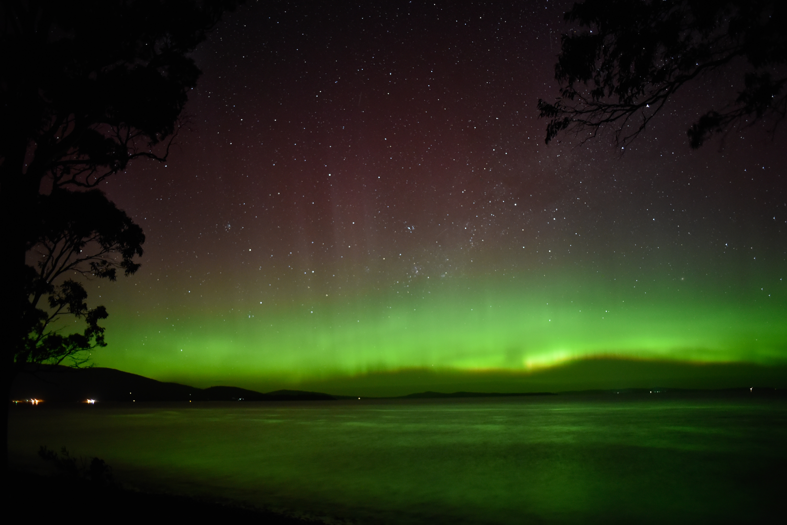

Australian Magnetometers in Schools

Aurora australis from southern Tasmania. Photo by Will Standring,
via Wikimedia Commons,
licensed under CC BY 2.0.
University of Tasmania outreach project supporting the teaching of geomagnetism, space weather and the aurora in schools.
Classes